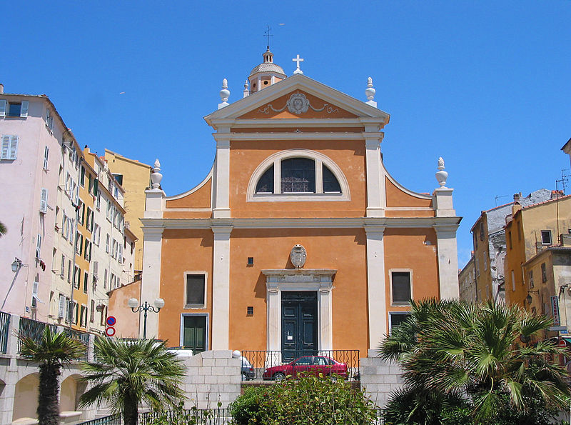
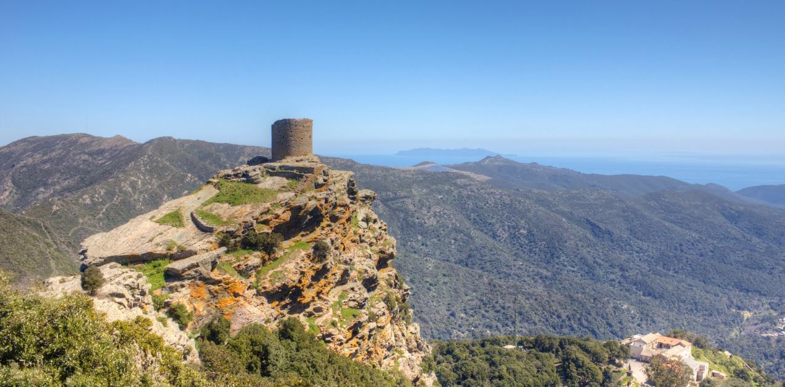
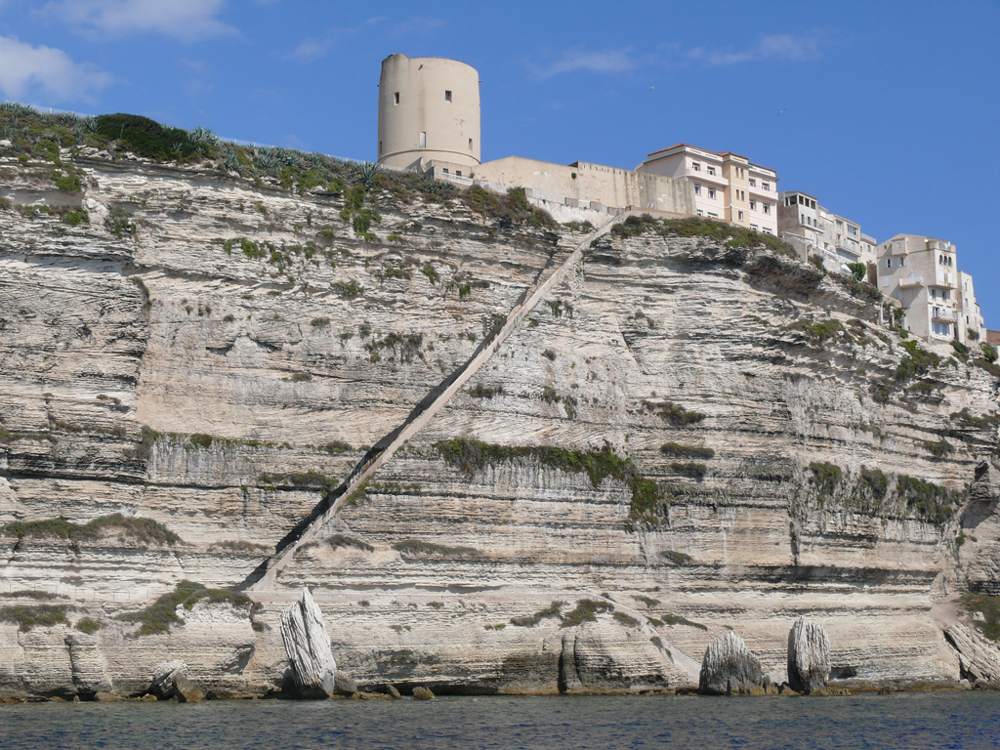
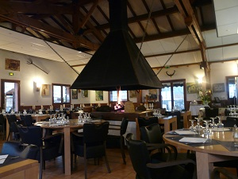
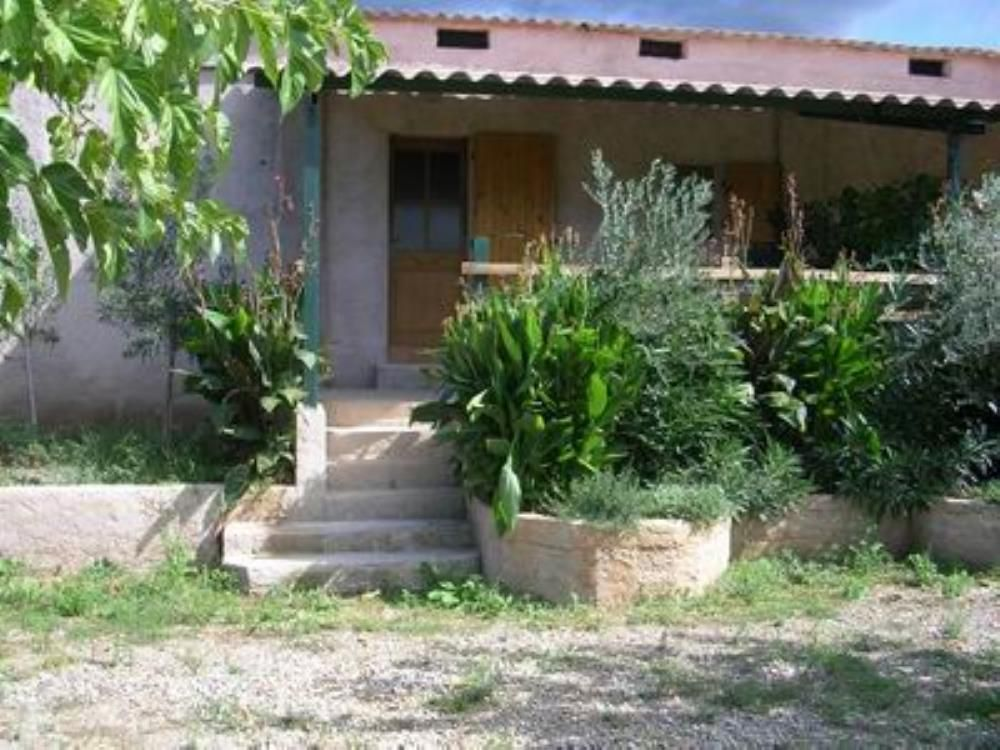
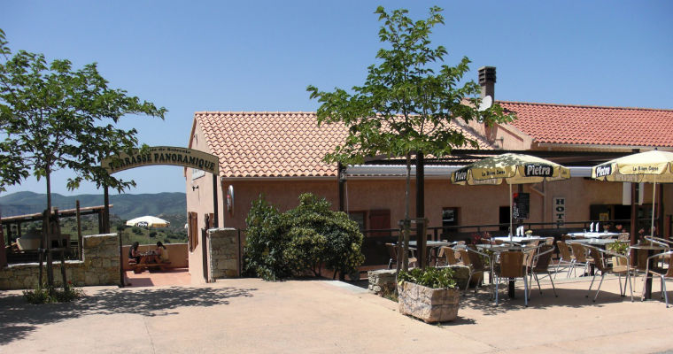

Dans cet article, nous vous proposerons de nombreux lieux traditionnels et authentiques de Corse, regorgeant d’émotions, et d’histoires fortes, ainsi que des habitations types parfaite pour enrichir votre séjour.

La formidable cathédrale d’Ajaccio est sans doute l’un des lieux culturels à voir absolument. Construite en 1593, elle remplace depuis maintenant près de 400 ans une ancienne église démolie en 1553. Sa principale force réside en son architecture digne d’époque et ses couleurs chatoyantes.

La tour de Sénèque, situé tout au nord près la côte Corse, est une authentique tour génoise. Erigée au 16ème siècle à 564m d’altitude sur un petit piton rocheux, elle vous offrira un magnifique point de vue sur la côte italienne ainsi que sur la mer.

Les escaliers du Roi d’Aragon, taillés en 1420 à même la roche en suivant la falaise, est sans aucun doute un lieu unique au monde. Situé au sud de l’île près du village de Bonifacio, ils offriront aux plus courageux une expérience exceptionnelle avec une vue imprenable sur les calanques. Selon la légende, il est raconté que ces escaliers ont été construits en une seule nuit par les soldats du Roi d’Aragon, Alphonse V.
Pour prolonger votre séjour, nous vous conseillons également d’authentiques habitations typiquement corses. Entre maisons d’hôtes et restaurants corses, ils sauront vous accueillir chaleureusement. Leur architecture typiquement corse, toujours d’époque, conviendront à toute la famille. Construite en pierre, avec leurs poutres en bois apparentes et leurs pergolas originales, elles sauront vous laisser le souvenir d’une expérience mémorable. Voici notre sélection de quelques gites et restaurants:

-L’auberge du Col de Bavella, spécialisée à la fois dans le logement en tant que gite, et dans la restauration, vous accueillera à bras ouverts. Situé à proximité des chemins de randonnées, d’escalade et de cannoying: parfait pour les amateurs de sports et de ballades en pleine nature.

-Les gites ruraux de Troscia vous invitent quant à eux dans leur maisons typiquement corse à partager un séjour synonyme de tranquillité. Sa proximité avec une petite ferme saura ravir petits et grands. Situé à 15 minutes du village de Saint-Florent, les activités ne manqueront pas d’égailler votre séjour.

-Le relais de Saleccia, localisé près du désert des Agriates et des célèbres plages de Saleccia et du Loto, est une référence dans le domaine de la restauration corse. Recommandés par plusieurs guides touristiques, vous pourrez y déguster une cuisine traditionnelle tout en admirant un superbe panorama sur les montagnes et la mer.